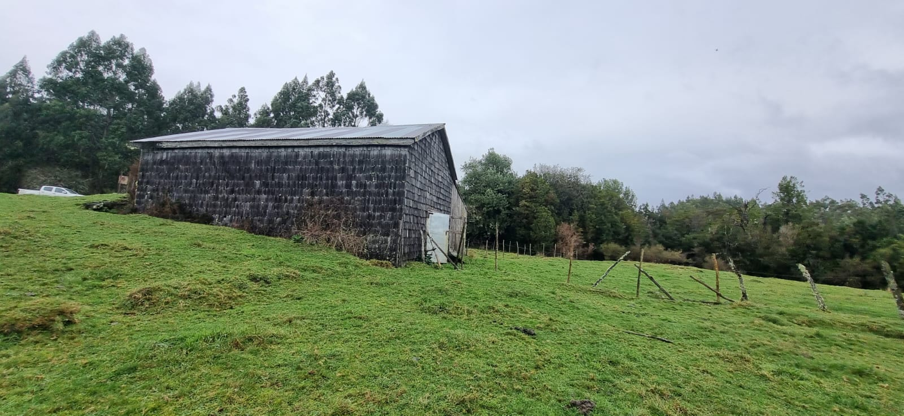
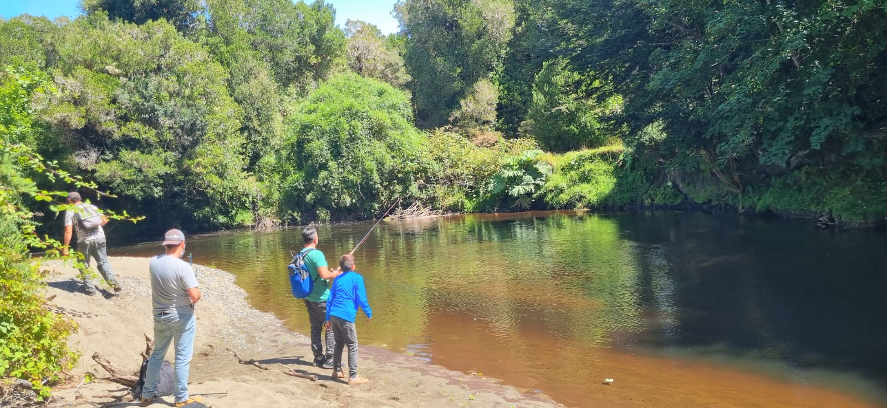
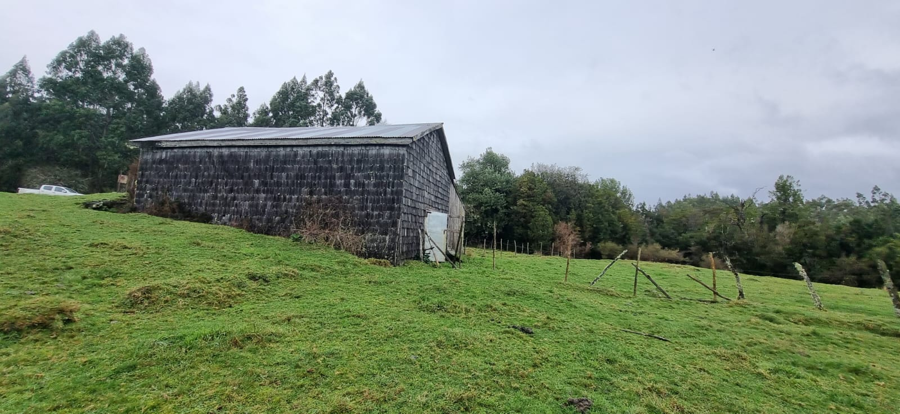
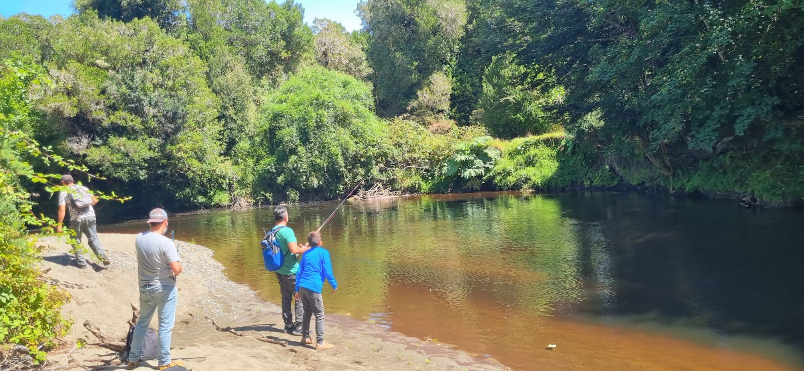
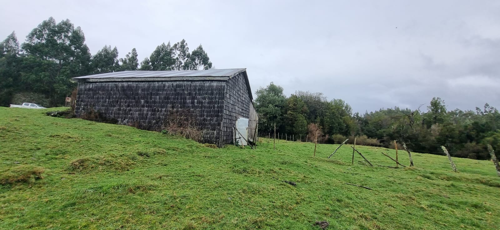
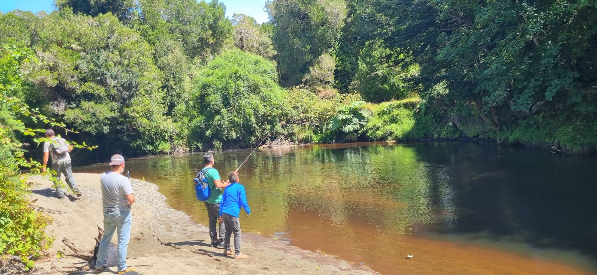

Galería del sitio


 



Parcela de 5.000 m² (0,5 ha) en el sector Curanto del Parque Restauración Puntra. Bosque nativo con acceso a camino público, y accesos al río Puntra por servidumbres y senderos autodidácticos de reforestación. Camino 4×2 listo y Plan de Manejo CONAF aprobado en el sitio.
5.000 m² (0,5 ha)
377,5 UF
(CLP $14.926.004)
14 de enero de 2026
Caduca el 25 de enero de 2026

